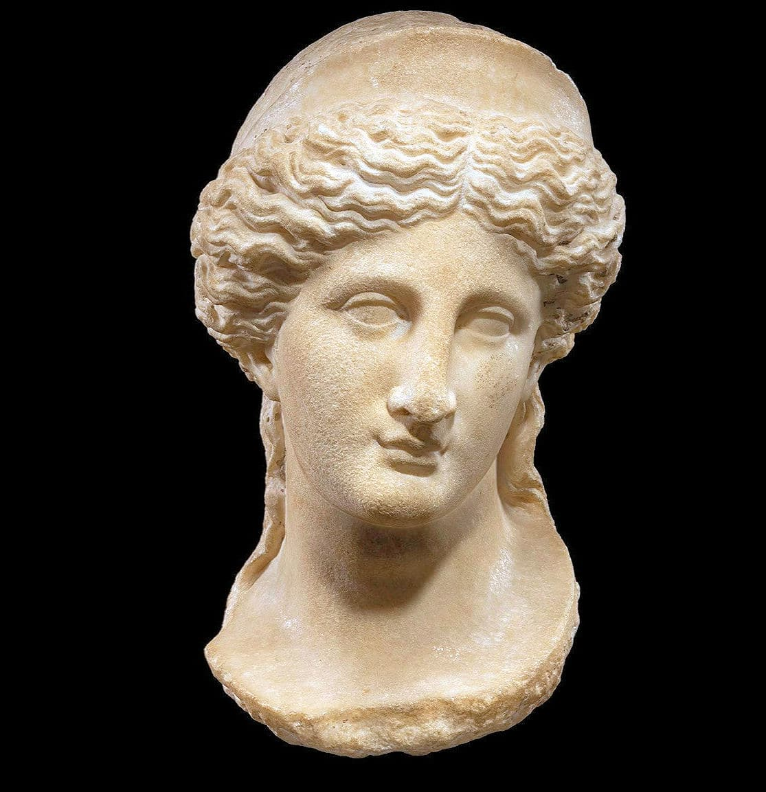
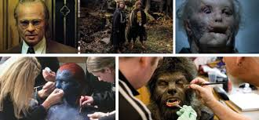
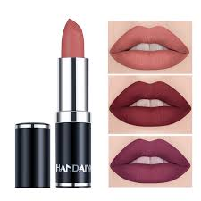
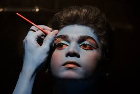
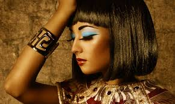
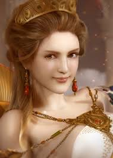
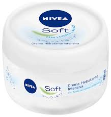
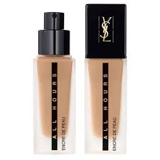
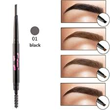
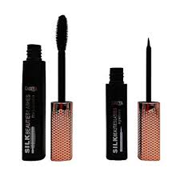

Maquillaje
¿Qué es?
El maquillajees la práctica de decorar la piel y otras partes visibles del cuerpo para resaltarlas.También se define como maquillaje todo producto usado para decorar o arreglar rasgos faciales o corporales de una persona; este se compone de diversos elementos con funciones determinadas para cada parte (ojos, labios, cejas, pestañas, Entre Otros).
Recibe su nombre en honor a Venus, la diosa romana del amor.
¿Quién es Venus?
Venus es una diosadelamor la belleza y la fertilidad de la mitología romana a quien se adoraba y festejaba en muchas fiestas y mitos religiosos romanos.

Venus era identificada con la diosa griega Afrodita y la etrusca Turan, tomando aspectos prestados de ambas
Maquillaje en el Cine y teatro
el maquillaje es imprescindible, pues las condiciones de iluminación inciden sobre la percepción y
también es imprescindible para dar a las personas el color de la piel que se necesita.
 
Los origenes del maquillaje
Época Antigua
La intención del maquillaje ha sido siempre mostrar una apariencia más joven, e intentar acercarse el máximo posible al ideal de belleza de la sociedad.
También se utilizaba para demostrar el estatus social al que pertenecías (solo los nobles utilizaban productos de belleza) pues antiguamente tener una tez morena se relacionaba con largas jornadas de trabajo al sol y con el campesinado. Por eso, la palidez demostraba que formabas parte de la realeza o las clases nobles.
Antiguo Egipto
los polvos negros y verdes eran usados por hombres y mujeres indistintamente para pintar sus ojos. Su ideal de belleza pasaba por una piel bronceada, unos ojos grandes y delineados en forma de pez en color oscuro,
labios coloreados en tonos terracota y cejas muy cuidadas como podemos observar en los bustos de la época.

Antigua Grecia y Roma
En la Grecia clásica el maquillaje era disimulado aunque importante para las griegas.
En la época romana el peinado y el maquillaje se cuidaban al máximo, especialmente en actos sociales. El canon de belleza era el de una mujer de piel blanca y mejillas sonrojadas.

La piel blanca era sinónimo de nobleza y distinción frente a mujeres de piel oscura o quemada por el sol que trabajaban en el campo.
El Kit de maquillaje
Crema hidratante e iluminador
Debido a los químicos que presenta en cada producto puede afectar al rostro con el paso del tiempo

Base de maquillaje y corrector
La base de maquillaje sirve para compactar el tono de piel así realza los rasgos faciales e ilumina las zonas más oscuras de la piel.

Lápiz para cejas
Debemos aplicarnos un maquillaje especial para ello y dejarlas impecables gracias a un cepillo. Consigamos personalidad en nuestra cara gracias a las cejas.

Eyerline y mascara de pestañas
Sin necesidad de usar pestañas postizas se puede sacar partido a las propias gracias a la máscara de pestañas.

Labial
